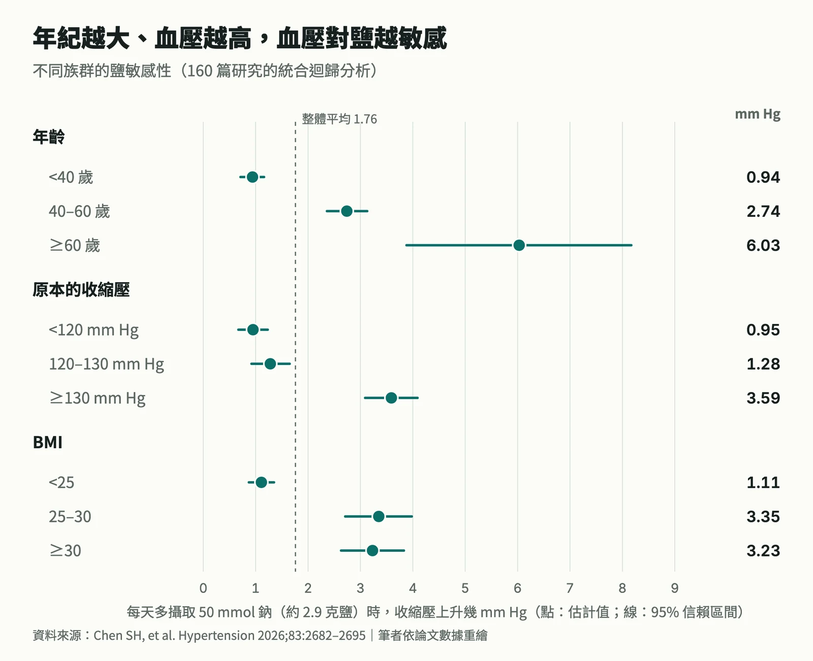
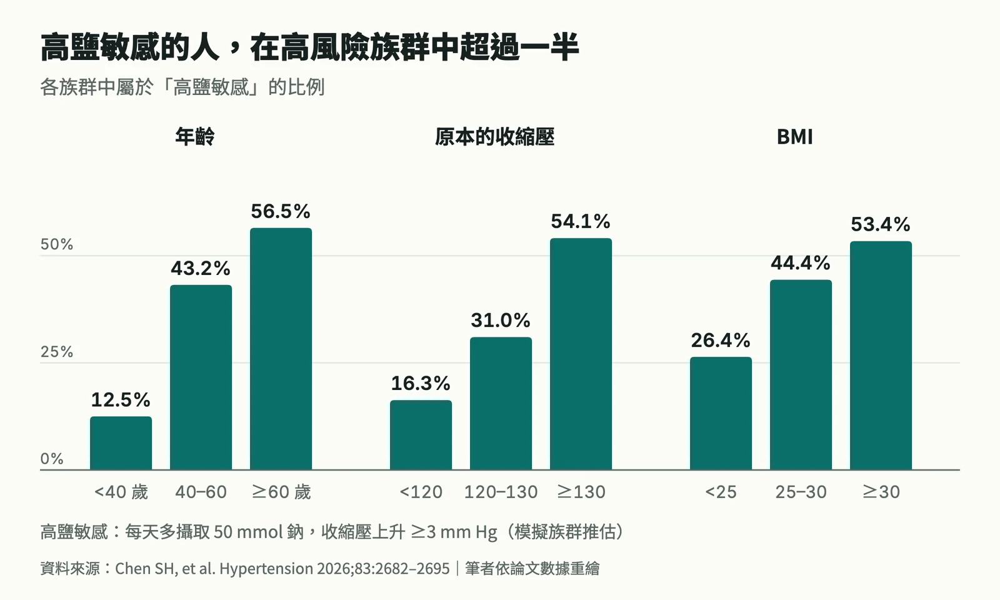
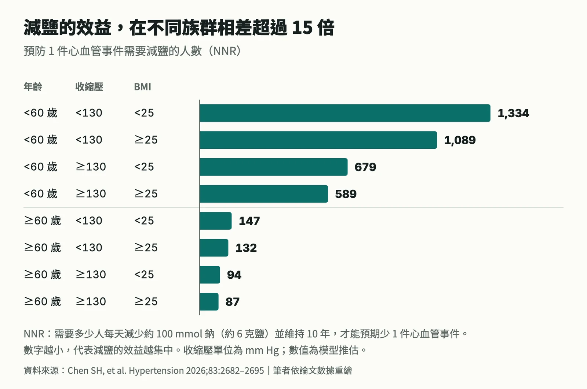

一、減鹽，是不是對每個人都一樣有用？
如果您本人或家人朋友有高血壓，「吃清淡一點、少吃點鹽」大概是最常聽到的一句建議。這句話完全正確：減少鈉攝取可以降低血壓，是各國高血壓指引都一致推薦的生活型態調整。2024 年歐洲心臟學會（ESC）指引與 2025 年美國 AHA/ACC 指引，都建議把每日鈉攝取量控制在大約 2,000–2,300 毫克以下，而且這個建議並不依照年齡、血壓高低或代謝狀態做區分。
可是不論在臨床上或是生活中，我們都會遇到一種情況：同樣認真減了鹽，有些人的血壓明顯下降，有些人卻幾乎沒有變化。
對後者來說，這不只是「努力沒有回報」的挫折感。如果一位血壓已經偏高的人，花了好幾個月嘗試減鹽，血壓卻始終降不下來，這段時間也可能延後了其他必要治療的討論。因此我們一直很想知道：有沒有辦法事先看出，哪些人比較可能從減鹽中得到明顯的血壓下降？ 而且這些線索最好是在門診就能輕易取得的資料，而不是需要特殊檢查的代謝或生化指標。
這篇文章想和大家分享的，就是我們最近發表在 Hypertension 期刊上的一項研究，試著回答這個問題。如果您對血壓數字的意義、或是高血壓的定義還不太熟悉，可以先閱讀〈多少算高血壓？為什麼高血壓被稱為沉默殺手？〉。
二、什麼是「鹽敏感性」？
在醫學上，我們用鹽敏感性（salt sensitivity）來描述這種個人差異：當鈉攝取量改變一個固定的量，血壓會跟著改變多少。改變越多，代表這個人對鹽越「敏感」。
在這項研究中，我們把鹽敏感性統一定義為：每天鈉攝取量相差 50 毫莫耳（mmol）時，收縮壓相差多少 mm Hg。50 mmol 的鈉大約是 1,150 毫克，換算成食鹽約 2.9 公克，差不多是半茶匙鹽的量。
鹽敏感性在學術上已經被研究了幾十年，過去研究也發現，鹽敏感的人未來發生心血管疾病的風險較高，即使他們一開始血壓正常。可惜的是，要精準測量一個人的鹽敏感性，通常需要讓受試者在嚴格控制下連續吃高鹽與低鹽飲食共兩週，再比較兩階段的血壓差異。這在一般門診幾乎不可能做到。
所以真正的問題是：我們能不能用門診本來就會記錄的資料，去推估一個人大概屬於鹽敏感程度較高還是較低的族群？
三、我們怎麼做這個研究？
我們系統性地搜尋了 PubMed、Embase 與 Cochrane 三個資料庫，從資料庫建立之初到 2025 年 4 月，凡是有比較「高鈉」與「低鈉」兩種情況下血壓差異的研究都納入評估。最後共納入 160 篇研究、255 個估計值、16,443 位受試者，涵蓋隨機分派試驗與觀察性研究，受試者從血壓正常的年輕人到正在服用多種降壓藥的高血壓病人都有。
接著，我們用統合迴歸分析（meta-regression）來回答「哪些特徵和較大的鹽敏感性有關」。簡單來說，它是把每一篇研究當成一個資料點：有些研究的受試者平均 25 歲，有些平均 65 歲；有些研究的受試者血壓正常，有些全是高血壓患者。再看看這些研究層級的特徵，和該研究觀察到的鹽敏感性之間有沒有系統性的關係。
我們也做了相當多的穩健性檢驗，包括：
- 比較用 24 小時尿鈉測量與用飲食問卷估計鈉攝取的結果是否一致；
- 只納入 2003 年 JNC 7 指引之後發表的研究，確認早年的血壓測量方法沒有影響結論；
- 檢驗同時改變的鉀攝取量是否干擾了結果；
- 用多重插補處理缺失資料，以及評估發表偏誤。
這項研究在開始前就已經在 PROSPERO 預先登錄研究計畫（CRD420251035133），並依照 PRISMA 2020 準則進行與報告。
最終發表在的期刊本身是美國心臟協會（AHA）發行的 Hypertension，是高血壓研究領域最具代表性的期刊之一（2025 年影響係數 9.8）。除了正文之外，我們也附上了完整的補充資料：包括每個資料庫的完整搜尋策略、PRISMA 2020 與 MOOSE 兩份報告檢核表、8 張補充表格與 13 張補充圖表，讓有興趣的讀者能夠檢視每一個分析步驟。網址可以直接點擊這裡
四、研究發現：年齡和原本的血壓，是最重要的兩個線索
先看整體結果：每天鈉攝取量每多 50 mmol，收縮壓平均高約 1.76 mm Hg（95% 信賴區間 1.54–1.98）。這個數字本身不算大，但真正有意思的是，它在不同族群之間差異非常大。
我們把研究依照受試者特徵分組來看：
| 族群特徵 | 每 50 mmol 鈉的收縮壓變化 |
|---|---|
| 年齡 <40 歲 | 0.94 mm Hg |
| 年齡 ≥60 歲 | 6.03 mm Hg |
| 收縮壓 <120 mm Hg | 0.95 mm Hg |
| 收縮壓 ≥130 mm Hg | 3.59 mm Hg |
| BMI <25 | 1.11 mm Hg |
| BMI ≥30 | 3.23 mm Hg |
也就是說，60 歲以上族群的鹽敏感性，大約是 40 歲以下族群的 6 倍；收縮壓 130 以上的族群，大約是收縮壓 120 以下族群的近 4 倍。以連續變化來看，研究族群的平均年齡每多 5 歲，鹽敏感性就增加約 0.41 mm Hg；平均收縮壓每高 5 mm Hg，鹽敏感性就增加約 0.23 mm Hg。

當我們把這些因素同時放進同一個模型裡互相調整後，年齡和原本的收縮壓仍然是最強、而且彼此獨立的兩個因素。BMI 也和較高的鹽敏感性有關，而它的影響有一部分可能是透過讓血壓升高來表現。這也提醒我們，體重、血壓和鹽敏感性三者是彼此相關、互相牽動的。
另一個角度是看「高鹽敏感」的人有多少。我們事先定義：每 50 mmol 鈉會讓收縮壓上升 3 mm Hg 以上，就算是高鹽敏感。結果顯示：
- 40 歲以下族群中，約 12.5% 屬於高鹽敏感；60 歲以上則上升到 56.5%。
- 收縮壓 120 以下族群中約 16.3%；收縮壓 130 以上則有 54.1%。
- BMI 25 以下約 26.4%；BMI 30 以上約 53.4%。

更值得注意的是分布的形狀。在收縮壓 130 以下的族群，鹽敏感性大多集中在 0 附近（中位數約 0.99 mm Hg）；但在收縮壓 130 以上的族群，不只平均值較高（中位數約 3.48 mm Hg），分布也更分散，出現一群對鹽反應特別劇烈的人。
血壓越高、年紀越大，不只是「平均」比較怕鹽，也有更多人屬於對鹽特別敏感的那一群。
五、從血壓下降到預防心血管疾病：相差 15 倍的效益
血壓降幾 mm Hg，對一般人來說還是有點抽象。所以我們進一步把結果換算成一個更直覺的指標：NNR（number needed to restrict），也就是「需要多少人減鹽，才能預防 1 件心血管事件」。它的概念和我們之前在〈風險判讀 02 | 不是有效就該做：談 NNT 如何幫助我們理解效益〉談過的 NNT 相同：數字越小，代表效益越集中。
我們假設一個符合公共衛生政策的情境：把每天的鈉攝取量從目前全球平均約 187 mmol（大約 11 公克鹽），降到世界衛生組織建議的 87 mmol（大約 5 公克鹽），也就是減少約 100 mmol。再根據過去大型研究中「收縮壓每降 1 mm Hg，心血管風險約降低 2%」的關係，以及 SCORE2 風險模型估算的 10 年心血管風險，計算不同族群的 NNR。
結果差距非常大：
- 60 歲以下、收縮壓 <130、BMI <25 的族群：預估 10 年心血管風險約 1.1%，NNR 約 1,334。
- 60 歲以上、收縮壓 ≥130、BMI ≥25 的族群：預估 10 年心血管風險約 6.8%，NNR 約 87。

換句話說，在後者這個族群，大約 87 人持續減鹽 10 年，就可以預期少發生 1 件心血管事件；在前者則需要約 1,334 人。兩者相差超過 15 倍。原因有兩個：年長、血壓高的人減鹽後血壓降得比較多，而且他們原本的心血管風險也比較高，兩者相乘之下，絕對效益就被放大了。
減鹽的建議對每個人都一樣，但每個人能從中得到的好處並不一樣。
六、這些結果不能怎麼解讀？
在分享這些數字時，有幾件事一定要說清楚，避免被過度解讀。
第一，這是族群層級的結果，不能直接套用在個人身上。統合迴歸分析使用的是每篇研究的「平均年齡」、「平均血壓」等資料，看的是研究與研究之間的差異。這告訴我們「平均年齡較高的族群，平均鹽敏感性較高」，但不能保證任何一位 65 歲的長輩減鹽後血壓一定會大幅下降，也不能斷定某位 30 歲的人減鹽一定沒用。這種從群體推論到個人的限制，在流行病學上稱為生態謬誤（ecological fallacy）。個人的實際反應，還是要透過規律的居家血壓測量來觀察。
第二，NNR 較高的族群，並不代表減鹽對他們沒有好處。年輕、血壓正常、體重正常的族群，平均鹽敏感性仍然大於零，只是幅度較小；而且這群人的心血管風險本來就低，所以「預防 1 件事件需要的人數」自然比較多。從公共衛生的角度來看，全民減鹽的價值，在於讓一大群人的血壓都往下移一點，長期下來仍能減少可觀的疾病負擔。同時，年輕時建立的飲食習慣也會延續到年紀漸長、鹽敏感性逐漸升高的階段。
第三，NNR 是模型推估，不是實際觀察到的事件數。它建立在「每降 1 mm Hg 降低約 2% 風險」、「血壓下降能長期維持」等假設上；而且納入的研究大多追蹤時間不長，長期減鹽的效果可能和短期研究看到的不同。這些數字比較適合用來比較不同族群之間的「相對差距」，而不是當成精確的預測值。
第四，這不是叫大家停止減鹽或改吃藥。這項研究也不是在說「年輕人可以隨意吃鹹」。它想提供的，是在全民減鹽的基礎上，再進一步辨認出最需要、也最可能受益於積極減鹽輔導的族群。
七、結語：用門診就有的數字，讓減鹽建議更精準
回到最初的問題：誰比較可能從減鹽中得到明顯的血壓下降？我們的研究發現，年齡、BMI、原本的血壓是三個最簡單、也最有力的線索。這些數字幾乎在每一次門診都會被記錄，不需要額外的檢查或費用。
對年紀較大、血壓偏高的人來說，這項研究提供了一個很實際的訊息：減鹽很可能是一項值得認真投入、效益相當高的非藥物治療。對預期反應較小的人，減鹽仍然是值得維持的健康習慣，但如果血壓已經偏高，也不必只寄望於減鹽，應該和醫師討論整體的血壓控制策略，避免延誤治療。
當然，這項研究只是第一步。未來還需要使用個別受試者資料的研究，以及前瞻性的驗證，才能確認這些族群層級的發現能不能用在每一位病人身上，以及依照風險分層給予不同強度的減鹽輔導，是否真的能帶來更好的血壓控制與心血管預後。
減鹽是所有人的功課，但對某些人來說，它是特別划算的一份功課。
本文介紹的研究：Chen SH, Yeh CY, Chiang-Lin YP, et al. Clinical Modifiers of Salt Sensitivity: A Meta-Regression and Risk Translation Study. Hypertension. 2026;83:2682–2695. doi:10.1161/HYPERTENSIONAHA.126.27410
本文內容僅供衛教與知識分享，不構成個人醫療建議。若您有血壓相關問題，請與您的醫師討論。